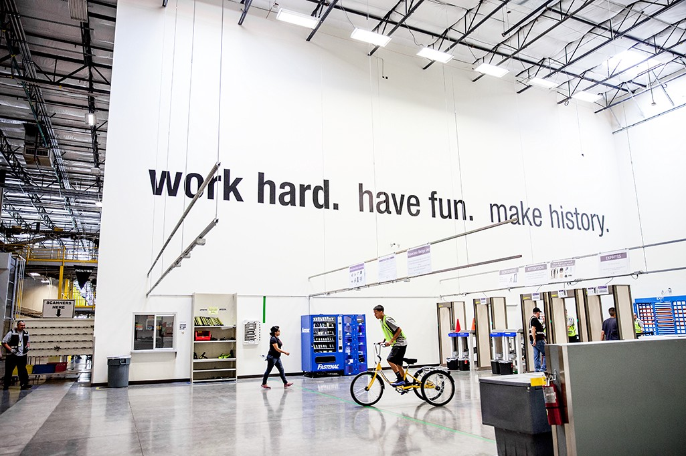

We are, all of us, Machines
How to work at Amazon
WHEN I GET HOME, I’M GONNA GET WASTED AND THINK ABOUT SLICING MY WRISTS OPEN WITH A RAZOR. I won’t do it; I’ll just think about it. I’ll take a fresh blade and hold it up to one of my more supple veins. A dramatic gesture. I’ll park my carcass in the corner of my shower and bleed out. Leave a real fucking mess for the slumlord’s LLC to deal with. I take another package off the conveyor belt and shove it onto the stowing rack.
I keep thinking about all the things that led me to this exact point, for hours, for my entire shift. Oh, I squandered whatever education I’ve had – sure. I can’t stop dwelling on the past. A terminal drop out. Like a lot of my peers I’ve been floating from job to job with no concrete, fixed experience. I’ve ghosted a few jobs. I’ve invented half of my resume. I scan a box of McCafe Keurig cups and hoist it from a good height above my shoulders, trudge it down to its sortation cubby. I’ve already clocked it in, another data point fed into the system. Soon, a picker will come around and heave this shit over to the packer.
One hopeful thing I keep coming back to is slashing my supervisor’s tires.It’s a lot more practical than,say,the one where I chuck a hefty,small box at the back of his bald head and kick his skull in when he’slying on the shop floor.He’s got this very jowly face and two beady little eyes that are too close to each other, accentuated by his prescription eyeglasses. I’m also pretty sure he’s military,or something close to it, which would make three out of five supervisors who’ve been troops. Overall, I’m pretty sure it’s a split between those types and the “good workers,” those “associates” who make a name for themselves by sucking up to the supervisors, by hitting certain productivity rates, or whatever. Anyway, I just haven’t been able to find a real opportunity to do so – slashing his tires, I mean. That motherfucker keeps parking his new Kia Soul directly under one of the surveillance cameras outside. Just two spots to the right and I’d be in business.
This is the best job I’ve ever had. The easiest hire. The highest pay. In certain respects, the most forgiving in terms of discipline. When I start falling, I’m taking you all down with me.
We are, all of us, machines.
Getting hired at Amazon is very easy.
All you have to do is apply and take their basic aptitude tests. No personality quizzes, no trick questions, and if memory serves they don’t inquire too deeply into your work history. After that, you schedule your mass hiring event. These facilities hire by batches of roughly two dozen. You go to some hotel conference room they’ve rented out. You get your W-4s, background check authorization, cotton-swab drug screen, and mandatory corporate screed. That’s it. You’ve got the job, and you need only subject yourself to a crash course on company policy before your first day is scheduled.
Engels described labor arbitrage at the advent of industrial capitalism like this: the capitalists would send their goons out onto the streets to recruit the unemployed, the unemployed would take the first wages barked out at them, and they’d be led en masse to the factories and mills to work a day, or a week, and then it’s back out on the streets again. The capitalists hadn’t fully worked out the flow of production or the circulation and rotation of capital that we take for granted these days. Work a week in the mill and the individual capitalist might have to shut it down for close to a month to really collect on his return.
Amazon imparts a similar laissez-faire attitude in their hiring process and in their overall labor regime, except this is for a world in which the mass consumer base of imperialism is a prime mover and the workforce is expected to ply the same shit job for years at a time. The company exercises such a lack of discrimination in order to absorb local masses of the unemployed, or semi-employed, and quickly turn them out. The company doesn’t care where you come from, what you want, or where you’re going; the company wants your productivity and your time. The fact that the company,the management, and your supervisors don’t, in fact, pretend to give a shit about you feels quite liberating at first. This is just the first element of Amazon’s whole self-government.
On the other hand, the turnover rates have been spiked by the points system and your initial seasonal contract. “Initial seasonal contract,” as in “terminable at any time for any reason,” and “points system,” as in “easier to fire if you score a steady contract.” The former is pretty self- explanatory but the latter is kind of unique.
The points system is directly governed by Amazon’s AI and by its company software. The idea is each point, out of a maximum of twenty, is a demerit; nine points as a seasonal worker or thirteen points as a regular employee means you’re fired. If you want a shift or half a shift off, that’s a point hit. If you dip below the productivity rates they are continuously tracking and logging on shift, that’s a point hit. If you spend some “time off-task,” to get some water or go to the bathroom, that’s a point hit. If the supervisors just want to fuck with you, because they don’t like you, that’s a point hit.
UPS employs a similar system, but the difference is you get a union rep after 30 working days and the whole process is mediated by actual human beings. At Amazon, this is mediated almost entirely by the AI, and the AI is like a very distant and stupid god. This is good for eliminating the human interface – like when you lie to get out of a shift you don’t have to worry about how bad you really are at lying; but it dissolves any kind of leverage you might attain from a real social environment. The company’s social environment is almost completely virtual, in fact. The company counts on you being out of there in a month or three, so there’s less time for you to really get upset about it.
The AI is your boss, your boss’s boss, and your boss’s boss’s boss: it sets the target productivity rates, the shift quotas, and the division of labor on the floor. Your supervisor’s job is to clean up for it, make sure that no one notices its calculations and projections exceed basic physical limitations – to realize that its logic precludes humanity. Ultimately what this means to you is that you’ll rarely work with the same people twice, you’ll be isolated, put on random tasks from shift to shift, slog for stowing or sorting or picking or packing rates well exceeding your average – because your supervisor told you so, and the program told him before that. You’re always working for the machine or trying to work around its surveillance in order to work less.
Sooner or later you’ll get fired or drop out. Don’t worry about it. Your info’s expunged from their system after a year. After that, you’re free to apply again.
I would very much like to see a world in which there is a nonzero chance that someone ordering bulk Tide pods or 48 rolls of toilet paper from their Echo will receive a nailbomb in its place.

If you need to let off some steam on shift at the delivery station, wait for a nice long train of packages. Skim each label and try to find one that was picked and packed the same day. These are the priority packages: One-Day or Two-Day – in any case Prime packages. Quickly swat it off the conveyor belt, and knock it over to its stowing rack. Once you get it over there, and no stower or team leader is in sight, prop it against a rack leg and just kick the shit out of it. When you’re done, put it in its proper place. Ten minutes, or less, from now, the stower will flag you down. Hey ,they’ll say. This one’s damaged. Send it over to Problem Solve. You’ll apologize, say you didn’t catch it, and toss it back onto the conveyor belt. Ah, man ,you’ll think, I can’t believe a Prime member is gonna miss out on all its great benefits. The damaged package will likely take more than a few days to replace if you successfully busted its contents.
The main problem the AI management system poses in the delivery stations is regulating the flow of production. The secondary problem is maintaining the nominal productivity rate per hour, per worker, in proportion to daily output targets, which are always rising with “consumer demand.” Amazon’s business is the realization of value. Maintaining their monopoly position, their market share, is a matter of making sure their product makes it to people’s doorsteps or offices in a matter of days, or increasingly mere hours. Without this, they’re still a very profitable online marketplace, but they’re no longer Amazon. No longer could they hold any claim to their megalomaniacal ethos – “Everyone is a customer.”
Be prepared to see the conveyor belt congested with literally hundreds of packages as the buffers struggle to keep up with the unloaders. Be prepared to see the aisles littered with loose packages, in an unmanageable heap, as the stowers struggle to keep up with the buffers. Be prepared to get shouted down by your supervisor or your team leader at the tail end of your shift, telling you you’ll have to stay for another two hours – because the fucking Computer-God doubled the quota during your lunch break. No one is relaying this information because the workers are only useful to the supervisors as a way of making the numbers go up.
I hate my supervisor not because he’s breathing down my neck, calling me and telling me to cover for some asshole’s shift, or something; I hate my supervisor because he’s a fucking caveman who doesn’t understand, doesn’t have to understand, the systems he implements or the laptop he’s always glued to. People keep leaving in the middle of this shift, it’s not just me. I hate the fucking cunt because he has been trained to convert his frustrations with the company’s program into contempt for the workers. For this reason, when his beady little eyes glaze over me – he’s scanning the aisles again – as I’m lifting a 75 pound shipment of home décor off the belt, I feel loathing. I feel like I’m going to maim that son of a bitch.
The stower can only stow as fast as the buffer can buff, and the buffer can only buff as fast as unloaders unload. The AI sets the pace of production, the supervisor is tasked with calibrating the speed of the conveyor belt in accordance with it. The belts are always, always, turning. Someday the belts will run faster than you thought was possible. Someday, corporate hopes, the stowers, buffers, unloaders, supervisors, and the computer that runs it all will achieve equilibrium and rise together on promises of company swag and free takeout for lunch. Everyone is a customer.
The problem of employing machinery in any industrial venture, whether that’s logistical or mass manufacture, is the problem of fixed capital. Even with bleeding-edge hardware or software, labor or time-saving devices, whatever, the venture is only as profitable as its workers. The machines can and will provide or make possible certain productivity rates yielding a certain quota, per shift, but only that baseline. To increase the surplus, to keep it rising, to make the workers – the human capital – more productive, the capitalist must employ other means. Automation was and wasn’t a bluff. Code, GPS trackers, apps, the scanner strapped to your fingers, the burner phones strapped to your bicep, your forearm, are the new regime now.
Amazon’s closest competitor is Walmart. Where Walmart has excelled with its vertically-integrated brand cult, its insane hierarchies, its cheap managerial-authoritarian ethos, Amazon has implemented a relatively lateral form of organization, producing a diffusion of power under a Cyber-Moloch which is understood and controlled by no one. Minimal human intervention is the rule. Higher rates, for the stowers and the sorters and the pickers and the packers, is the grand notion. Aim high, for the consumer pigs, the program, and the company, and always keep aiming high is the singular order.
You can’t have fun in the fulfillment centers. In the fulfillment centers, the nominal rate of productivity per shift is the primary issue. It’s a matter of contriving layer upon layer of arbitrary, oppressive, and infantilizing systems in order to boost the average picking/packing/sorting rate per worker and justify the fucking imposition of progressive increases in daily output targets. You can’t have any fun, you can’t break anything. Cameras are everywhere. Everything is tracked, including the product – especially you and everyone else – and there is a certain chain of accountability running through the whole division of labor in the facility.Everyone is working as hard as they possibly can: they are tricking themselves into thinking they’ll shape up to the system’s expectations when they’re only pushing the rates and quotas higher. You’re competing against everyone else, you’re racing for the quota. The only thing moving your two legs is the fear.The only thing that’s moving them this fast is this vain hope: maybe you’ll go home early.
The new feature for the system are these minigames on your little burner and we’re trying to beat each other. Are you winning? Shoot for those rates, punch above your purchasing power. Are you getting addicted? I think they’re trying to simulate some kind of dopamine rush. It’s 86 degrees in the facility, the heat index is 89. Did you think they had central? My sweat is sizzling on my skin, miles to go with all your fucking bulk packs of Bounty paper towels, rice cookers, and upholstery. I’m delirious. I forgot to eat today but the burning in my stomach means it doesn’t matter. Four giant overhead fans in the whole place. At the uppermost edge of my eyeline they look like pendulums. This is the third consecutive week the supervisors have pulled us all together to remind us that Amazon is not liable if you suffer heat stroke on the job and die; furthermore, if you have any medical conditions it must be cleared by an Amazon-certified doctor. Furthermore, drink water. We’ll only give it out for free sometimes, but drink water.
The Sunday shift is always too much for people.It’s a skeleton crew again and the program has simply assumed there’s a full staff. Aren’t you thankful you scored the overnight shift? I think about the best way to die in a fulfillment center: nestled in some obscure corner where it’ll take a week for somebody to find me? Or should I throw myself at one of these big sortation racks, use my last bit of strength to bury myself under a mound of toys and video games and the occasional toaster? When I start falling, I’m taking you all down with me. No. No, fuck it. Fuck it.
An overwhelmingly hostile form of organization, always pursuing the offensive. The supervisors keep insinuating that they can automate us out of our jobs. They keep lying about how bad it used to be but nothing’s changed. They are watching our footsteps and tracking our subtle movements. Amazon puts out a press release: their facial identification algorithm has successfully identified “fear” –“It’s afraid!” – another lie but a useful one. Are they training it on us? We are subsidizing state security services all over the planet. Amazon is cloud-based services. Amazon is the CIA and and the DoD and ICE. In Germany, they are deploying the subtly-named Rudolf Hess private security company to suppress the organizing efforts of migrant workers at their facilities. In Southeast Asia and Taiwan, they are fraying the nerves of contracted production workers for a fraction of our pay, which the company would like to convince you was a reward for increased productivity. Everyone is a customer.
A recent report has exposed the dangerous conditions of Amazon’s “last-mile” delivery system. I’d do well to reproduce, at length, the description of a fatality laid out in this article, for which the author holds the company responsible:
Valdimar Gray was delivering packages for Amazon at the height of the pre-Christmas rush when his three-ton van barreled into an 84-year-old grandmother,crushing her diaphragm, several ribs, and fracturing her skull.
’Oh my god!’ screamed Gray as he leaped out of his van. It was a bright, clear afternoon on Dec.22, 2016, and the 29-year-old had been at the wheel of the white Nissan since early that morning, racing to drop Amazon packages on doorsteps throughout Chicago. He stood in anguish next to Telesfora Escamilla as she lay dying, her blood pooling on the pavement just three blocks from her home. After the police arrived, Gray submitted to drug and alcohol tests, which came up clean. He would later be charged with reckless homicide.
The pressure is the regime. Thousands of workers have consented to piss and shit in adult diapers, slog through eight-hour, ten-hour, shifts in deadly heat and humidity – always learning the masochistic thrill of the burning pain and all the delirium of exhaustion – because the system has quietly maneuvered them into this position of acquiescence and normalization. When your car meets another in a head-on collision going 60 or 70 miles per hour, the spray of shattered glass will cover your face, the twisted metal will stick out at all angles, like a phalanx, and penetrate your torso and groin at several points. You will be crumpled over the sagging airbag: your body is contorted in ways that even shock the first-responders. It’s not as if your grieving family, or the other one, can sue the car companies – nothing was technically wrong with either car – or get rid of the highways just because they had to keep the casket closed for your funeral. Plausible deniability, consent, contractual relationships, company policy, and comforting little delusions. The system is pressure.
Pick up those rates, folks! What’ve we been talkin’ about? Quality, people! It’s quality!
– THERE IS A REAPER WHOSE NAME IS DEATH. HE SETS HIS KNIFE TO THE WHETTER, NOW IT CUTS BETTER.
In which we are presented with the crisis of a proletariat that has been bought off with video games and the freedom to jerk off to whatever they want, whenever they want.
“We the best!” DJ Khaled calls out from over the facility’s speakers. “We make the best music!” It’s starting all over again, for the fourth time in my shift and I’ve only worked five whole hours of it. I’ve developed a notable emotional and physical response to this song. At first call, my right eye twitches slightly and I will involuntarily flex my knuckles. Occasionally I will ball one of my hands into a fist. I feel a combination of acute disgust, defeat, and fury. The whole track reminds me of this corporate lobby I was in once. I remember I was stuck in Pittsburgh, trying to take shelter from the blizzard outside, and I stepped through these revolving doors. Boxy chandeliers hung over a two-story reception area that also functioned as a minimall. Little shops were set up on a couple sides facing the reception desk, flanking a corridor leading to the elevators. An escalator went up to a Starbucks, on the other side a set of windows revealed a somewhat appealing view of the street below. Just about everything was covered in this marble facade. I’ll always recall the scent of perfume and cologne, coffee, and all-purpose cleaner wafting all around me, clashing with my own stench of mildew, cold sweat, and dirty clothes. I take another package off the conveyor belt and shove it onto the stowing rack.
The Fourth Reich is the dictatorship of the Silicon Valley capitalist, who is part-technocrat and part- New Age mystic. His volksgenosse is the professional consumer. A lot of the mostly young, mostly white, workers have already bought into his delusion of a “sharing economy.” They almost never think about work, only “gigs” and “side hustles.” They think they’re entrepreneurs but the fact that the capitalists have gotten them to think a corporation like Amazon is doing them a favor by offering them regular employment betrays their real status. They’re useful idiots, the good workers: they pull the highest rates on any task, they collaborate with the supervisors, and they’re always the first to land a steady contract as a “Blue Badge.” What strange force also compels them to tell us that the break’s over, get back to work, I don’t know; I only know I absolutely despise them for it. Someday they’ll turn into supervisors and likely transfer out, eagerly lapping up whatever shit the company throws at them.
The majority of the workers have actually embraced the level of social atomization that’s engineered into the system. The flat wage increase to $15/hr was employed as a provisional deterrent against worker organization but the primacy of random assignments on shift and the encouragement to leave the facility during all your breaks practically ensures it. On break, almost everyone will scatter to their cars and spend all their time alone; the minority will occupy the break room. There might be a few breakaway groups of two or three people making small talk but this is really minimal and insufficient. The greatest divides between workers are produced by this atomization rather than hierarchy or the division of labor. No one is going to work at the same place for long and there’s less incentive overall to maintain your baseline sanity on shift by talking to other people when most can satisfy this by looking at their phones.
All the migrant workers from Africa and the Middle East seem to have the right idea. They all clock in and clock out together, rarely leave each other’s sides when they’re on break, and give each other rides home. They’re bound by a common language, culture, and to a very immediate degree a common history. The migrant workers work only the hours they’re scheduled for. When the supervisor demands another hour, they pretend not to understand him and leave side by side.
There’s a Somali worker who always comes in with a bomber jacket, no matter how hot it is. One day I indicated to him that I thought it was cool, to which he smiled bashfully and nodded. This was the closest I’ve ever felt to another human being while working at Amazon. All shift I tried to focus on that bomber jacket, trying to fantasize about buying one before this fantasy eroded – hour by hour – into a dull rage. “We are, all of us, machines.”
Everyday, more and more, I’m tapping into my innermost slave morality. I’m leaning into it and taking it to new heights. I’d like to imagine a world in which everyone has on their minds: morepay, less work. No, more than that: refuse to work. Kill your supervisor to reclaim your humanity. Refuse the system, the stratification, and the machinification. Destroy this whole cybernetic organism that weighs us down like a fucking tumor hanging off our sides, and deal with all the fucking programmers who coded that shit. It’s no use trying to swat it out of their hands and take it for ourselves. This is a war of annihilation.
It’s not that I want to negotiate any better terms with the management, the company, or the customer: I want them all to suffer. I don’t want to facilitate the flow of thousands of Keurig cups to people with more money than they can spend; I want them to fucking choke on it and leave me alone. We’re boiling alive and thanking them for it. I want workers to stop pissing and shitting and killing themselves for a mass of parasites who produce nothing and consume everything. Dignity through the conquest of power. I want all the workers to spend more time with each other, conspiring against the company, breaking the web of surveillance, of ideology, and looting and smashing everything they can get their hands on.
I want them to start thinking about work, talking about work, and how it makes them feel.
ELASTICO GOMEZ is a high school dropout and former anarchist. He works and drinks. He is currently residing in a secure location somewhere in the Midwest.